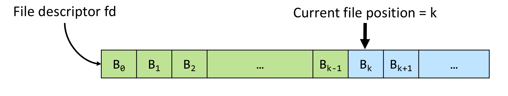
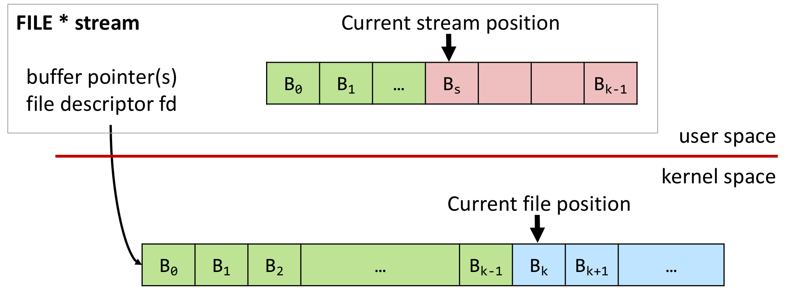
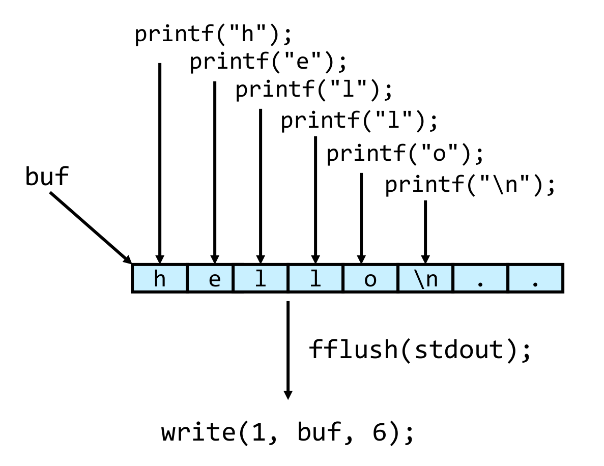
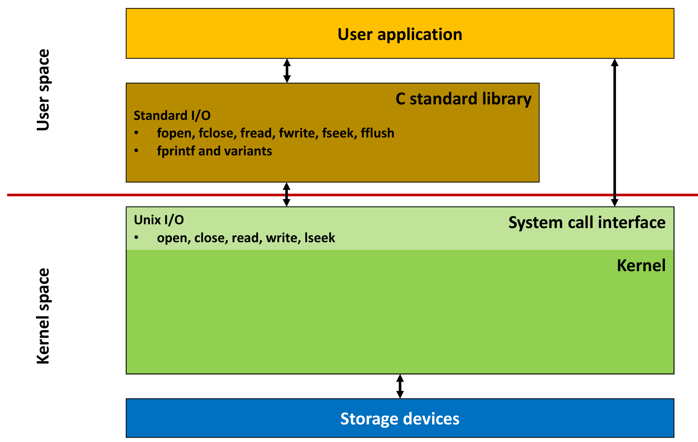
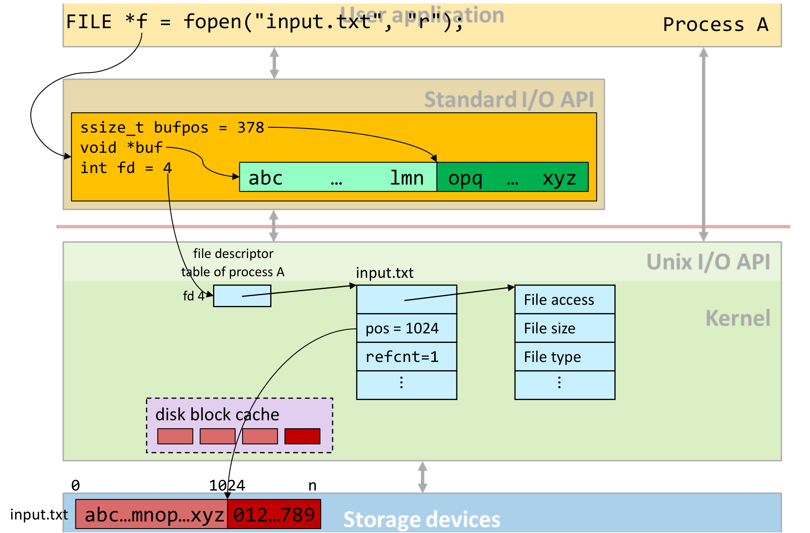

본 포스트는 서울대학교 컴퓨터공학부 시스템 프로그래밍(M1522.000800, System Programming, Fall 2026) 강의 자료 중 4강 — Input/Output: Direct and Buffered I/O (총 47장)를 바탕으로, 강의를 처음 듣는 독자도 논리적 흐름을 따라갈 수 있도록 재구성한 것입니다. 원본 슬라이드는 영문으로 작성되어 있으며, 본문의 대섹션 구분은 강의 첫머리의 Lecture Outline 슬라이드(Unix I/O → Standard I/O → Interaction of Standard I/O with Unix I/O → Summary)를 그대로 따랐습니다. 앞 회차(3강 — Unix Filesystem Concepts)에서 정의한 “파일 = 바이트 열”과 “모든 것은 파일이다”라는 전제를 그대로 이어받습니다.
한 줄 요약 (TL;DR)
“Unix I/O는 커널로 내려가는 가장 얇은 통로이고, Standard I/O는 그 통로를 덜 자주 쓰기 위해 사용자 공간에 버퍼 하나를 끼워 넣은 것입니다.”
3강에서 파일을 바이트 열로 정의했다면, 4강은 그 바이트 열을 실제로 읽고 쓰는 두 개의 API를 나란히 놓고 비교합니다. 먼저 Unix I/O는
open·close·read·write·lseek다섯 개의 시스템 호출만으로 모든 종류의 파일을 다루는 가장 낮은 계층입니다. 대신 두 가지 대가를 응용 프로그램에 떠넘깁니다 — 요청한 바이트 수보다 적게 처리되는 짧은 카운트(short count)를 직접 처리해야 하고, 호출이 시스템 호출과 1:1로 대응하므로 문자 하나를 옮길 때마다 1만 클럭 이상을 지불해야 합니다. 10 MiB를 바이트 단위로 복사하면 그 대가가 약 열 배의 실행 시간 차이로 측정됩니다. Standard I/O는 이 두 대가를 각각 사용자 공간 버퍼와 서식 입출력 라이브러리(fprintf/fscanf계열)로 갚습니다. 버퍼링은 대상 파일의 종류에 따라 완전 버퍼링 · 라인 버퍼링 · 무버퍼링 세 모드로 자동 결정되며, 여기서 “\n을 만나면 출력된다”가 출력이 터미널일 때만 참이라는 유명한 함정이 태어납니다. 마지막으로fopen·fread·fclose의 의사 코드를 열어 보면,FILE이 결국fd하나와 버퍼 하나를 묶은 사용자 공간 구조체에 지나지 않는다는 사실이 드러납니다.
1. Unix I/O
강의는 커널이 제공하는 가장 밑바닥의 입출력 인터페이스에서 출발합니다. 이 계층이 무엇을 해 주고 무엇을 해 주지 않는지가 2장에서 Standard I/O가 태어나는 이유를 전부 설명합니다.
int fd = open("unix.io",
O_CREAT | O_WRONLY,
S_IRWXU | S_IRGRP);1.1 개요 (Unix I/O: Overview)
- Unix I/O란 입출력을 수행하기 위한 *nix 커널의 인터페이스를 가리킵니다.
- 응용 프로그래머가 수행할 수 있는 가장 낮은 수준의 입출력(lowest level of I/O)입니다.
- Unix I/O는 시스템 호출(system call)로 구현되어 있습니다.
- 설계 개념(design concept): 어떤 타입의 파일이든 접근할 수 있는, 하나의 표준화된 범용 인터페이스를 제공한다는 것입니다. 그 “어떤 타입”에는 다음이 모두 포함됩니다.
- 일반 파일(regular files), 디렉토리(directories)
- 블록 장치(block devices): 디스크, 파티션 등
- 문자 장치(character devices): 메모리, 키보드, 마우스 등
- 파이프(pipes), 소켓(sockets) 등
강의 슬라이드는 이 절을 한 문장으로 요약합니다 — “어떤 종류의 장치와도 상호작용할 수 있는 단 하나의 파일 인터페이스(one single file interface to interact with any kind of device).” 그리고 괄호 속에 작게 (well, almost)라고 덧붙입니다. 3강에서 본 “모든 것은 파일이다”라는 명제가 API 수준에서 현금화되는 지점이 바로 여기이며, 그 현금화가 100%는 아니라는 단서까지 같이 놓여 있는 셈입니다.
1.2 파일 추상화 (Unix I/O: File Abstraction)
Unix I/O가 다루는 대상은 “파일”이 아니라 “열린 파일(open file)”입니다. 이 구분이 중요합니다.
- 열린 파일은 파일 디스크립터(file descriptor, handle)로 식별됩니다.
- 디스크립터는 그 밑에 있는 파일을 유일하게 식별합니다.
- 파일의 상태를 갱신하는 모든 연산에는 이 핸들이 필수입니다.
- 파일을 열거나 생성할 때 반환되며, 이후의 모든 파일 연산에서 사용됩니다.
- 열린 파일마다 파일 안의 현재 위치(current position in the file)를 가리키는 내부 포인터가 하나씩 있습니다.
- 읽기/쓰기 연산은 그 위치에서 시작해서 그만큼 위치를 전진시킵니다.
- 파일 디스크립터를 공유할 때 미묘한 문제(subtleties)가 생깁니다.

fd로, 디스크립터가 가리키는 대상은 개별 바이트가 아니라 이 바이트 열 전체임을 나타냅니다. 위에서 아래로 내리꽂히는 굵은 화살표는 현재 파일 위치(current file position) \(= k\)이며, 그 위치를 기준으로 색이 갈립니다 — 왼쪽의 연두색 구간 \(B_0 \dots B_{k-1}\)은 이미 지나온(읽거나 쓴) 부분이고, 오른쪽의 하늘색 구간 \(B_k\)부터는 아직 처리하지 않은 부분입니다. 즉 열린 파일의 상태는 “어떤 파일인가(fd)”와 “어디까지 왔는가(\(k\))” 단 두 개의 값으로 요약되며, read/write는 화살표를 오른쪽으로 밀고 lseek은 화살표를 임의의 위치로 옮기는 연산이라는 것이 이 그림의 요지입니다.파일이 \(m\)개의 바이트 \(B_0, \dots, B_{m-1}\)로 이루어져 있고 현재 위치가 \(k\)일 때, read나 write가 \(n\) 바이트를 처리하면 위치는 다음과 같이 갱신됩니다.
\[ k \;\longleftarrow\; k + n \]
이 한 줄이 Unix I/O의 상태 전이 전부입니다. “어디까지 왔는가”라는 값 하나가 커널 안에 있고, 모든 읽기/쓰기가 그 값을 밀고 나간다 — 이 단순함이 다음 절의 fd 공유 문제와 3장의 pos = 1024를 동시에 설명합니다.
1.3 파일 디스크립터 (Unix I/O: File Descriptors)
- 파일 디스크립터는 한 프로세스의 열린 파일들을 유일하게 식별하는 음이 아닌 정수(non-negative integer)입니다.
- 프로세스마다 따로(per-process)입니다 — 프로세스 1의
fd10과 프로세스 2의fd10은 서로 다른 파일을 가리킵니다. 디스크립터는 전역 이름이 아니라 프로세스 내부의 색인입니다.
- 프로세스마다 따로(per-process)입니다 — 프로세스 1의
- 모든 프로세스는 이미 열려 있는 세 개의 파일 디스크립터를 가지고 삶을 시작합니다 (
unistd.h에 정의).
| 번호 | 매크로 | 의미 |
|---|---|---|
0 |
STDIN_FILENO |
표준 입력(standard input) |
1 |
STDOUT_FILENO |
표준 출력(standard output) |
2 |
STDERR_FILENO |
표준 에러(standard error) |
- 기본적으로 이 세 디스크립터는 터미널에 연결되어 있으며, 입력 · 출력 · 에러 출력에 사용됩니다.
- 그 외의 모든 파일 디스크립터는 Unix I/O API를 통해 획득해야 합니다.
프로그램이 아무것도 하지 않아도 세 개가 이미 열려 있다는 사실은, 뒤에서 printf가 왜 아무 준비 없이 바로 화면에 글자를 찍을 수 있는지를 설명합니다 — 이미 열린 fd 1이 거기 있기 때문입니다.
1.4 Unix I/O API
Unix I/O API는 커널이 제공하는 시스템 호출과, 그것을 감싼 C 표준 라이브러리의 편의 래퍼(fcntl.h/unistd.h)로 이루어집니다.
| 연산(Operation) | API | 변형(Variants) |
|---|---|---|
| 열기와 생성 | int open(const char *pathname, int flags)int creat() |
openat |
| 읽기와 쓰기 | ssize_t read(int fd, void *buf, size_t count)ssize_t write(int fd, void *buf, size_t count) |
pread, readvpwrite, writev |
| 위치 지정 | off_t lseek(int fd, off_t offset, int whence) |
llseek, lseek64 |
| 닫기 | int close(int fd) |
|
| 파일시스템에서 제거 | int remove(const char *pathname) |
unlink, unlinkat, rmdir |
강의는 여기에 실용적인 팁 하나를 끼워 넣습니다. off_t, size_t처럼 이름만 보고는 실체를 알 수 없는 타입 t의 기반 타입을 찾는 방법입니다.
echo "#include <stdlib.h>" | gcc -E - | grep -w _*t
# 예: off_t의 정체를 확인하려면
echo "#include <stdlib.h>" | gcc -E - | grep -w _*off_tgcc -E는 전처리만 수행하고 멈추는 옵션이므로, 헤더를 모두 펼친 결과에서 typedef 사슬을 직접 눈으로 따라갈 수 있습니다. 헤더를 손으로 열어 가며 추적하는 대신 컴파일러에게 시키는 방법입니다.
1.5 파일 열기와 생성 (Opening and Creating Files)
파일을 여는 것은 “이제 이 파일에 접근할 준비가 되었다”고 커널에 알리는 일입니다.
#include <sys/types.h>
#include <sys/stat.h>
#include <fcntl.h>
int open(const char *pathname, int flags);
int open(const char *pathname, int flags, mode_t mode);
int creat(const char *pathname, mode_t mode);pathname: 파일의 이름(과 경로)flags: 상태 플래그와 생성 플래그 —O_RDONLY,O_APPEND등mode: 새로 생성되는 파일의 파일 모드 —S_IRWXU,S_IRGRP등 (3강에서 본 권한 비트입니다)- 자세한 내용은 man page를 참조합니다.
반환값은 파일 디스크립터이며, -1은 에러가 발생했음을 뜻합니다 (에러 원인은 errno, #include <errno.h>).
open()은 어떻게 가변 개수의 인자를 받는가
open()의 선언이 두 가지인 것처럼 보이는 이유는, 실제로는 printf()와 마찬가지로 가변 인자 함수이기 때문입니다. 전처리 결과를 직접 확인하면 드러납니다.
echo "#include <fcntl.h>" | gcc -E - | grep "open"extern int open (const char *__file, int __oflag, ...) __attribute__ ((__nonnull__ (1)));
extern int openat (int __fd, const char *__file, int __oflag, ...)...이 붙어 있으므로 세 번째 인자는 선택적입니다. O_CREAT가 플래그에 있을 때만 mode를 읽어 가는 식으로, 함수 쪽에서 플래그를 보고 인자를 꺼낼지 말지를 결정합니다.
실제 사용 예는 다음과 같습니다. 기존 파일을 읽기 전용으로 여는 경우와, creat()로 새 파일을 만드는 경우입니다.
int fd;
if ((fd = open("/etc/hosts", O_RDONLY)) < 0) {
perror("Cannot open file");
exit(EXIT_FAILURE);
}int fd = creat("log", S_IRUSR|S_IWUSR);
if (fd < 0) {
perror("Cannot create file");
exit(EXIT_FAILURE);
}두 예제 모두 반환값을 즉시 검사하고 있다는 점에 주목할 만합니다. perror()는 errno에 담긴 마지막 에러를 사람이 읽을 수 있는 문장으로 번역해 표준 에러로 출력합니다.
1.6 파일 닫기 (Closing Files)
파일을 닫는 것은 “이 파일에 대한 접근이 끝났다”고 커널에 알리는 일입니다.
#include <unistd.h>
int close(int fd);fd: (열려 있는) 파일 디스크립터- 성공하면
0, 에러면-1을 반환합니다.
int fd;
int retval;
…
if ((retval = close(fd)) < 0) {
perror("Cannot close file");
exit(EXIT_FAILURE);
}단순히 “에러 하나가 더 발생한다”에서 끝나지 않고, 멀티스레드 프로그램에서 예기치 못한 실패를 낳을 수 있습니다. 강의가 드는 시나리오는 이렇습니다.
- 스레드 A가
fd를 닫습니다. - 스레드 B가 새 파일을 엽니다 — 커널은 비어 있는 가장 작은 번호를 주므로, 방금 반납된 그
fd번호가 재사용됩니다. - 스레드 C가 (이미 닫혔다고 생각한)
fd를 한 번 더 닫습니다.
그 결과 C는 자기 파일이 아니라 B가 방금 연 파일을 닫아 버립니다. 이중 close()가 위험한 이유는 “두 번 닫아서”가 아니라 디스크립터 번호가 그 사이에 다른 파일의 이름이 되어 있기 때문입니다.
1.7 파일 읽기와 쓰기 (Reading and Writing Files)
파일을 읽거나 쓴다는 것은 현재 파일 위치에서 count 바이트를 메모리로 복사하거나 그 반대로 복사한 뒤, 파일 위치를 갱신하는 것입니다.
#include <unistd.h>
ssize_t read(int fd, void *buf, size_t count);
ssize_t write(int fd, const void *buf, size_t count);fd: 파일 디스크립터buf: 데이터를 담을(담고 있는) 버퍼count: 읽거나 쓸 바이트 수
반환값은 실제로 읽거나 쓴 바이트 수입니다.
- 반환값이
< 0이면 에러가 발생한 것입니다 (man page 참조). - 짧은 카운트(short count), 즉
retval < sizeof(buf)인 경우가 있을 수 있으며 반드시 에러인 것은 아닙니다. 이 문제는 1.11절에서 따로 다룹니다.
읽기 예제 — 파일은 현재 파일 위치에서 바이트를 메모리로 복사하고 위치를 갱신합니다.
char buf[512];
int fd;
ssize_t nbytes;
…
if ((nbytes = read(fd, buf, sizeof(buf))) < 0) {
perror("Cannot read from file");
exit(EXIT_FAILURE);
}쓰기 예제 — 메모리에서 현재 파일 위치로 바이트를 복사하고 위치를 갱신합니다.
char buf[512];
int fd;
ssize_t nbytes;
…
if ((nbytes = write(fd, buf, sizeof(buf))) < 0) {
perror("Cannot write to file");
exit(EXIT_FAILURE);
}두 예제가 대칭이라는 점이 Unix I/O의 성격을 잘 보여 줍니다. 읽기와 쓰기는 방향만 반대일 뿐 같은 서명, 같은 상태 전이, 같은 에러 규약을 씁니다.
1.8 Unix I/O로 쓴 “Hello, world!” (“Hello, world!” with Unix I/O)
“Hello, world!”를 담은 버퍼의 내용을 STDOUT_FILENO에 씁니다.
write()는 쓸 바이트 수를 우리가 명시하도록 요구합니다.- 여기서 문자열 API(
string.h)의strlen()을 쓰는 것이 옳습니다. 문자열str은 끝에 종료 문자\0을 포함하는데, 이 문자는sizeof(str)에는 포함되지만strlen(str)에서는 무시되기 때문입니다.
#include <stdlib.h>
#include <unistd.h>
#include <string.h>
char str[] = "Hello, world\n";
int main(void)
{
write(STDOUT_FILENO, str, strlen(str));
return EXIT_SUCCESS;
}
// unixio/helloworld.c- 원칙적으로는
write()의 반환값을 항상 검사해야 합니다.
sizeof와 strlen의 차이가 여기서 눈에 보이는 결과의 차이가 된다는 점이 이 예제의 요점입니다. sizeof(str)을 썼다면 널 바이트까지 터미널로 흘러갑니다.
같은 문자열을 파일에 쓰는 경우는 한 단계가 더 필요합니다. STDOUT_FILENO는 이미 열려 있어 바로 쓸 수 있지만, 출력 파일은 명시적으로 열거나 생성해야 합니다.
#include <stdlib.h>
#include <unistd.h>
#include <string.h>
#include <fcntl.h>
#include <stdio.h>
char str[] = "Hello, world!\n";
int main(void) {
int fd = open("./output.txt", O_WRONLY | O_CREAT | O_APPEND,
S_IRUSR|S_IWUSR | S_IRGRP | S_IROTH);
if (fd == -1) {
perror("Cannot open/create file");
return EXIT_FAILURE;
}
write(fd, str, strlen(str));
close(fd);
return EXIT_SUCCESS;
}
// unixio/helloworld2file.c플래그 세 개가 |로 묶여 있습니다 — 쓰기 전용(O_WRONLY), 없으면 생성(O_CREAT), 기존 내용 뒤에 덧붙이기(O_APPEND). 그리고 O_CREAT가 있으므로 세 번째 인자 mode가 필요해집니다. 1.5절의 가변 인자 이야기가 여기서 실제로 쓰입니다.
1.9 파일 위치 이동 (Seeking in Files)
읽기와 쓰기는 위치를 앞으로만 밀어냅니다. 임의의 위치로 건너뛰려면 lseek()가 필요합니다.
#include <sys/types.h>
#include <unistd.h>
off_t lseek(int fd, off_t offset, int whence);fd: 파일 디스크립터offset:whence를 기준으로 한 오프셋whence: 기준점(base)
whence |
계산되는 새 위치 |
|---|---|
SEEK_SET |
\(\texttt{filepos} = \texttt{offset}\) |
SEEK_CUR |
\(\texttt{filepos} = \texttt{filepos} + \texttt{offset}\) |
SEEK_END |
\(\texttt{filepos} = \texttt{end} + \texttt{offset}\) (파일 끝 너머로도 이동 가능) |
- 새로운 절대 위치를 반환하며,
-1은 에러를 뜻합니다.
SEEK_END로 파일 크기 너머까지 위치를 옮긴 뒤 write()를 하면, 그 사이의 공간은 0으로 채워진 구간(a sequence of zeros)이 됩니다. 이것이 구멍(hole)이며, 어떤 파일시스템인지에 따라 실제로 디스크 블록을 차지할 수도 있고 그렇지 않을 수도 있습니다.
즉 “파일 크기”와 “실제로 점유한 디스크 공간”이 일치하지 않을 수 있다는 뜻입니다. 3강에서 본 대로 파일은 바이트 열이지만, 그 바이트 열이 반드시 물리적으로 연속하게 존재해야 하는 것은 아닙니다.
int fd;
…
if (lseek(fd, 100, SEEK_SET) < 0) {
perror("Cannot seek in file");
exit(EXIT_FAILURE);
}1.10 간단한 Unix I/O 예제 (Simple Unix I/O example)
지금까지의 요소만으로 표준 입력을 표준 출력으로, 한 번에 한 바이트씩 복사하는 프로그램을 쓸 수 있습니다.
#include <stdlib.h>
#include <unistd.h>
int main(void)
{
char c;
while (read(STDIN_FILENO, &c, 1) > 0) {
write(STDOUT_FILENO, &c, 1);
}
return EXIT_SUCCESS;
}read의 반환값이 0이 되면 EOF이므로 루프가 끝납니다. 열 줄 남짓한 이 프로그램은 개념적으로는 완벽하지만 실용적으로는 최악입니다 — 바이트 하나마다 시스템 호출 두 번을 발생시키기 때문이며, 그 비용이 정확히 2장에서 Standard I/O가 등장하는 이유가 됩니다.
1.11 짧은 카운트 (Short Counts)
짧은 카운트(short count)란 Unix I/O가 요청받은 것보다 적은 바이트를 읽거나 쓰고도 에러(-1)를 보고하지 않는 상황입니다.
ssize_t nbytes = read(fd, buf, 512);
printf("Read %ld bytes.\n", nbytes);Read 302 bytes.반환값 \(n\)은 다음 범위에 들어가며, \(n < \texttt{count}\)라는 사실 자체는 에러의 증거가 아닙니다.
\[ 0 \;\le\; n \;\le\; \texttt{count} \]
짧은 카운트는 여러 상황에서 발생할 수 있습니다.
- 읽기 중 EOF(end-of-file)에 도달한 경우
- 쓰기 중 파일시스템이 가득 찬 경우
- 터미널에서 텍스트 줄을 읽는 경우
- 네트워크 소켓이나 Unix 파이프를 읽고 쓰는 경우
- 프로세스에 인터럽트와 시그널이 전달된 경우
read의 man page는 이 사정을 직접 명시하고 있습니다.
RETURN VALUE — … 이 수가 요청된 바이트 수보다 작더라도 에러가 아니다. 예를 들어 지금 당장 사용 가능한 바이트가 더 적어서 그럴 수 있고(아마도 파일 끝에 가까워졌거나, 파이프 또는 터미널에서 읽고 있기 때문에), 혹은
read()가 시그널에 의해 중단되었기 때문일 수도 있다.
- 짧은 카운트를 다루려면 반환값과
errno를 세심하게 검사해야 합니다. man page를 참조하십시오.
요청한 만큼 처리되었는지를 호출할 때마다 확인하고, 모자란 만큼 다시 호출하는 루프를 직접 작성해야 한다는 뜻입니다. 이 부담이 4장 요약에서 Unix I/O의 단점 첫 번째로 다시 등장합니다.
1.12 전체 예제: 데이터 복사 (Full Unix I/O Example: Copying Data)
지금까지의 모든 요소가 한 프로그램에 모입니다. 파일 input의 오프셋 ofs에서 \(n\) 바이트를 읽어 파일 output에 덧붙이는 예제입니다.
- 인자를 명령줄에서 받습니다.
- 필요하면 출력 파일을 생성합니다.
- 에러를 검사하며, 특히 짧은 카운트를 검사합니다.
$ ./unixio data.dat test.dat 400000 100000
Opening input file 'data.dat'...
Opening output file 'test.dat'...
Seeking input file to position 400000...
Copying 100000 bytes...
Short count of 27776 when trying to read 34464 bytes from input
copied a total of 93312 bytes.
Closing files...실행 결과를 한 줄씩 따라가면 1장의 API가 순서대로 호출된 흔적이 보입니다 — open(입력) → open(출력) → lseek(400000으로 이동) → read/write 반복 → close. 그리고 마지막 두 줄이 이 예제의 진짜 교훈입니다. 34,464 바이트를 요청했는데 27,776 바이트만 읽혔고, 그 결과 요청한 100,000 바이트가 아니라 총 93,312 바이트만 복사되었습니다. 프로그램이 이 사실을 스스로 보고하고 있다는 것이 핵심입니다 — Unix I/O를 쓴다는 것은 이런 보고와 처리를 전부 직접 작성한다는 뜻입니다.
2. Standard I/O
FILE *f = fopen("standard.io", "r+");1장의 마지막에서 확인한 불편함이 2장의 출발점입니다. 강의는 먼저 Unix I/O가 무엇을 잘 못하는지를 측정으로 보여 준 다음, 그 두 가지 결함에 각각 대응하는 두 개의 목표를 세웁니다.
2.1 Unix I/O의 한계 (Shortcomings of Unix I/O)
- 응용 프로그램은 대개 문자 데이터를 읽고 씁니다.
- 한 번에 문자 하나씩 읽고 씁니다.
- 한 번에 텍스트 한 줄씩 읽고 씁니다.
- 그런데 Unix I/O는
- 호출이 시스템 호출과 1:1로 대응(mapped 1:1 to system calls)합니다.
- 이는 상당히 비쌉니다 — 1만 클럭 사이클 이상(> 10,000 clock cycles)입니다.
- 문자열 처리에 잘 맞지 않습니다(not well suited for string handling).
- 호출이 시스템 호출과 1:1로 대응(mapped 1:1 to system calls)합니다.
강의는 이 주장을 말로 끝내지 않고 10 MiB를 바이트 단위로 복사하는 실험으로 보여 줍니다.
$ time ./copy_unixio …
real 0m2.679s
user 0m0.363s
sys 0m2.316s$ time ./copy_stdio …
real 0m0.261s
user 0m0.261s
sys 0m0.000s두 결과의 대비가 매우 선명합니다.
copy_unixio |
copy_stdio |
|
|---|---|---|
| real (벽시계 시간) | 2.679s | 0.261s |
| user (사용자 공간 CPU) | 0.363s | 0.261s |
| sys (커널 공간 CPU) | 2.316s | 0.000s |
- real 기준으로 약 10배의 차이가 납니다.
- 더 중요한 것은 차이가 어디서 왔는가입니다.
user시간은 0.363s 대 0.261s로 큰 차이가 없는 반면,sys시간이 2.316s 대 0.000s입니다. 즉 느림의 원인은 “계산을 많이 해서”가 아니라 “커널에 너무 자주 들어갔다 나와서”입니다. - Standard I/O 쪽의
sys시간이 0.000s로 측정되었다는 것은, 같은 10 MiB를 옮기면서도 시스템 호출 횟수가 측정 분해능 아래로 떨어질 만큼 줄었다는 뜻입니다.
이 표 하나가 2장 전체의 동기입니다. 줄여야 할 것은 옮기는 바이트의 양이 아니라 커널 경계를 넘나드는 횟수입니다.
2.2 Standard I/O의 두 목표 (Standard I/O: Goals)
Standard I/O의 목표는 두 개이며, 각각이 2.1절에서 확인한 두 결함에 정확히 대응합니다.
- 입출력의 오버헤드를 줄인다(reduce overhead of I/O).
- 서식 입출력을 제공한다(provide formatted I/O).
첫 번째 목표를 달성하는 방법: 버퍼를 사용해 read()와 write() 시스템 호출의 횟수를 줄입니다.
- 버퍼링은 사용자에게 (대체로) 투명(transparent)합니다.
- 버퍼링에는 세 가지 종류가 있습니다 — 완전 버퍼링(fully buffered), 라인 버퍼링(line buffered), 무버퍼링(unbuffered).
두 번째 목표를 달성하는 방법: 서식 입출력 라이브러리(fprintf/fscanf 계열)를 제공합니다.
- Standard I/O 스트림 위에서 동작합니다.
- 버퍼링 모드와는 독립적입니다.
총 \(N\) 바이트를 한 바이트씩 읽는 경우를 생각해 보겠습니다.
- Unix I/O만 쓸 때: 호출이 시스템 호출과 1:1이므로 시스템 호출 \(N\)회가 발생합니다.
- 크기 \(B\)의 버퍼를 둘 때: 응용 프로그램은 여전히 \(N\)번 “한 바이트 달라”고 요청하지만, 버퍼가 비었을 때만 커널로 내려가므로 실제 시스템 호출은
\[ \left\lceil \frac{N}{B} \right\rceil \text{회} \]
로 줄어듭니다. 즉 시스템 호출 횟수가 \(1/B\)로 감소합니다. 응용 프로그램이 수행하는 함수 호출 횟수 \(N\)은 그대로지만, 그 호출들은 이제 사용자 공간 안에서 메모리를 읽는 값싼 연산이 됩니다.
2.1절의 측정에서 sys 시간만 사라지고 user 시간은 거의 그대로였던 이유가 이것입니다.
2.3 Unix I/O vs Standard I/O
Standard I/O의 버퍼링된 읽기(buffered read)가 실제로 하는 일은 다음과 같습니다.
- Unix
read를 사용해 바이트 블록 하나를 한꺼번에 가져옵니다(grab block of bytes). - 사용자 입력 함수는 그 버퍼에서 한 번에 한 바이트씩 꺼내 갑니다.
- 버퍼가 비면 다시 채웁니다(refill buffer when empty).

FILE * stream 구조체로, 그 안에 버퍼 포인터(buffer pointer(s))와 파일 디스크립터 fd가 들어 있습니다. 오른쪽 위의 칸들이 사용자 공간 버퍼이며, 아래로 꽂히는 화살표가 가리키는 \(B_s\)가 현재 스트림 위치(current stream position)입니다 — 버퍼 안에서 연두색 \(B_0 \dots\) 는 이미 응용 프로그램이 꺼내 간 부분, 분홍색 \(B_s \dots B_{k-1}\) 는 아직 버퍼에 남아 있어 앞으로 꺼내 갈 부분입니다. 선 아래쪽의 긴 칸들은 커널이 보는 실제 파일이고, 그 위의 화살표가 현재 파일 위치(current file position)로, 여기서도 연두색 \(B_0 \dots B_{k-1}\) 은 이미 커널이 넘겨준 부분, 하늘색 \(B_k\) 이후는 아직 읽지 않은 부분입니다. FILE 구조체에서 굽어 내려와 커널 쪽 \(B_0\)을 가리키는 화살표가 fd를 통한 연결입니다. 요점은 두 개의 위치가 서로 다른 속도로 움직인다는 것입니다 — 스트림 위치는 fgetc 한 번에 한 칸씩 부지런히 움직이지만, 파일 위치는 버퍼가 바닥날 때 한 번에 \(k\)칸씩 점프합니다. 그 점프 한 번이 시스템 호출 한 번이며, 그래서 빨간 선을 넘는 횟수가 버퍼 크기만큼 줄어듭니다.2.4 Standard I/O API
Standard I/O API는 C 표준 라이브러리에 구현된 상위 수준 입출력 함수들의 모음이며, 헤더는 stdio.h입니다.
| 연산(Operation) | API | 변형(Variants) |
|---|---|---|
| 열기와 생성 | FILE *fopen(const char *path, const char *mode) |
fdopen, freopen |
| 읽기와 쓰기 | size_t fread(void *ptr, size_t size, size_t nmemb, FILE *stream)size_t fwrite(const void *ptr, size_t size, size_t nmemb, FILE *stream) |
|
| 위치 지정 | int fseek(FILE *stream, long offset, int whence)long ftell(FILE *stream) |
rewind, fsetposfgetpos |
| 닫기 | int fclose(FILE *stream) |
fcloseall |
| 기타 | int fflush(FILE *stream)int feof(FILE *stream)int ferror(FILE *stream)int fileno(FILE *stream) |
1.4절의 Unix I/O API 표와 행 구성이 거의 그대로 대응한다는 점이 눈에 띕니다. open↔︎fopen, read/write↔︎fread/fwrite, lseek↔︎fseek, close↔︎fclose. 다만 첫 인자가 int fd에서 FILE *stream으로 바뀌었고, fflush·feof·ferror·fileno라는 버퍼의 존재에서 비롯된 함수들이 새로 생겼습니다. 특히 fileno는 스트림에서 그 밑의 fd를 다시 꺼내는 함수로, 두 계층이 실제로 포개져 있다는 증거입니다.
Standard I/O에는 서식 입출력을 위한 잘 알려진 함수들도 포함됩니다.
| 연산(Operation) | API | 변형(Variants) |
|---|---|---|
| 문자 또는 줄 읽기 | char *fgets(char *s, int size, FILE *stream) |
getsfgetc, getc,getchar, ungetc |
| 서식 입력 읽기 | int fscanf(FILE *stream, const char *format, …) |
scanf, sscanf,vscanf, … |
| 문자 또는 줄 쓰기 | char fputs(const char *s, FILE *stream) |
fputc, putc,putchar, puts |
| 서식 출력 쓰기 | int fprintf(FILE *stream, const char *format, …) |
printf, dprintf,sprint, snprintf,vprintf, … |
(표의 서명은 슬라이드 표기를 그대로 옮긴 것입니다.) 슬라이드에서 gets에 취소선이 그어져 있다는 점을 짚어 둘 만합니다. gets는 버퍼의 크기를 인자로 받지 않으므로 입력이 길면 버퍼 경계를 넘어 쓰는 것을 막을 방법이 없고, 그래서 size를 받는 fgets로 대체하는 것이 원칙입니다.
2.5 표준 스트림 (Standard I/O Streams)
1.3절에서 본 기본 STD*_FILENO 파일 디스크립터들은 대응하는 입출력 스트림으로 매핑되어 있습니다 (stdio.h에 정의).
| 스트림 | 대응하는 파일 디스크립터 | 의미 |
|---|---|---|
stdin |
STDIN_FILENO |
표준 입력 |
stdout |
STDOUT_FILENO |
표준 출력 |
stderr |
STDERR_FILENO |
표준 에러 |
#include <stdio.h>
#include <stdlib.h>
extern FILE *stdin; // standard input (file desc: STDIN_FILENO)
extern FILE *stdout; // standard output (file desc: STDOUT_FILENO)
extern FILE *stderr; // standard error (file desc: STDERR_FILENO)
int main(void)
{
fprintf(stdout, "Hello, world\n");
return EXIT_SUCCESS;
}0/1/2라는 정수가 FILE *라는 포인터로 한 겹 감싸졌을 뿐이라는 것이 이 절의 요지입니다. 같은 터미널을 가리키지만, 한쪽은 버퍼가 없고 다른 한쪽은 버퍼가 딸려 있습니다.
2.6 Standard I/O로 쓴 “Hello, world!” (“Hello, world!” with Standard I/O)
1.8절과 같은 일을 Standard I/O로 하면 코드가 이렇게 바뀝니다.
[f]printf()는 서식 출력을 지원하고, 문자열의 길이를 대신 계산해 줍니다. 1.8절에서strlen()을 직접 불러야 했던 부담이 사라집니다.
#include <stdio.h>
#include <stdlib.h>
char str[] = "Hello, world!\n";
int main(void)
{
fprintf(stdout, "%s", str); // specify output stream
printf("%s", str); // implicitly print to stdout
return EXIT_SUCCESS;
}
// stdio/helloworld.cfprintf(stdout, …)와 printf(…)가 완전히 같은 일을 한다는 것이 여기서 드러납니다. printf는 출력 스트림을 stdout으로 고정한 fprintf일 뿐입니다.
파일에 쓰는 경우도 Unix I/O와 마찬가지로 명시적으로 열고 닫아야 합니다.
#include <stdio.h>
#include <stdlib.h>
char str[] = "Hello, world!\n";
int main(void) {
FILE *out = fopen("./output.txt", "a+"); // a+: reading and appending
if (out == NULL) {
perror("Cannot open/create file");
return EXIT_FAILURE;
}
fprintf(out, "%s", str);
fclose(out);
return EXIT_SUCCESS;
}
// stdio/helloworld2file.c1.8절의 대응하는 코드와 비교해 보면 차이가 분명합니다. O_WRONLY | O_CREAT | O_APPEND와 S_IRUSR|S_IWUSR | S_IRGRP | S_IROTH라는 두 줄의 비트 마스크가 "a+"라는 문자열 하나로 축약되었고, 실패 판정이 fd == -1에서 out == NULL로 바뀌었습니다. 반환값이 정수에서 포인터로 바뀌었으니 실패를 나타내는 값도 따라 바뀐 것입니다.
2.7 버퍼링 이해하기 (Understanding Buffering in Standard I/O)
강의는 이 절의 제목을 “To flush, or not to flush, that is the question”으로 달아 놓았습니다. 버퍼가 존재하는 한, “언제 실제로 내보내는가”가 곧 프로그램의 관측 가능한 동작이 되기 때문입니다.

printf 여섯 번이 write 한 번이 되는 과정을 시간 순서대로 그린 그림입니다. 왼쪽 위의 buf 라벨에서 뻗은 화살표가 가리키는 가로 칸들이 stdout의 사용자 공간 버퍼이고, 칸 하나가 바이트 하나입니다. 위쪽에 계단식으로 늘어선 여섯 개의 호출 printf("h"), printf("e"), printf("l"), printf("l"), printf("o"), printf("\n")에서 각각 아래로 내리꽂히는 화살표는 그 호출이 버퍼의 어느 칸을 채웠는지를 나타냅니다 — 첫 번째 호출이 h를, 두 번째가 e를 채우는 식으로 왼쪽부터 차례로 한 칸씩 메워 나가며, 이 여섯 번의 호출 동안 커널로는 아무것도 내려가지 않습니다. 버퍼 오른쪽의 . 두 칸은 아직 쓰이지 않은 여유 공간입니다. 버퍼 아래로 내려가는 화살표에 붙은 fflush(stdout);가 버퍼를 비우라는 지시이고, 그 결과 맨 아래의 write(1, buf, 6); 시스템 호출 단 한 번이 발생해 채워진 6바이트가 파일 디스크립터 1로 한꺼번에 나갑니다. 여섯 번의 라이브러리 호출이 한 번의 커널 진입으로 압축된다는 것, 그리고 그 압축이 풀리는 시점을 fflush가 결정한다는 것이 이 그림의 요지입니다.- 버퍼는
"\n"을 만나거나fflush()가 호출될 때 출력fd로 비워집니다.- 다만
"\n"에서 비워지는 것은 출력이 터미널일 때뿐입니다!
- 다만
이 마지막 단서가 초보자를 가장 많이 괴롭히는 지점입니다. 터미널에서 잘 동작하던 프로그램이 출력을 파일로 리다이렉트하는 순간 아무것도 나오지 않는 것처럼 보이는 현상이 여기서 나옵니다. 이유는 다음 절에 있습니다.
2.8 버퍼링의 세 종류 (Standard I/O Buffering Types)
- 버퍼링은 사용자에게 (대체로) 투명하지만, 그 밑에 있는 파일의 종류에 따라 달라집니다(depends on the underlying file type).
| 종류(Type) | 모드(Mode) | 기본으로 적용되는 대상(Default for) |
|---|---|---|
| 완전 버퍼링(Fully buffered) | _IOFBF |
파일 디스크립터가 파일을 가리킬 때 |
| 라인 버퍼링(Line buffered) | _IOLBF |
파일 디스크립터가 터미널에 연결되어 있을 때 |
| 무버퍼링(Unbuffered) | _IONBF |
표준 에러 또는 사용자가 요청했을 때 |
setvbuf()로 직접 설정할 수도 있습니다.
2.7절의 함정이 여기서 설명됩니다. 같은 프로그램, 같은 printf 호출인데도 대상이 터미널이면 라인 버퍼링, 파일이면 완전 버퍼링이 적용됩니다. 터미널로 출력할 때는 \n마다 나오던 것이, 파일로 리다이렉트하면 버퍼가 가득 차거나 프로그램이 끝날 때까지 나오지 않는 것입니다. 버퍼링 모드가 프로그램이 아니라 출력 대상에 의해 결정된다는 사실이 이 함정의 뿌리입니다.
2.9 완전 버퍼링 (Standard I/O: Fully buffered)
파일을 대상으로 할 때 적용됩니다.
Unix I/O가 발생하는 시점
fread(): 버퍼가 비어서 채워야 할 때fwrite(): 버퍼가 가득 차서 비워야 할 때
플러싱(버퍼를 디스크에 쓰는 것)이 일어나는 시점
- 버퍼가 가득 차면 자동으로
fflush()를 호출하면 수동으로
즉 완전 버퍼링에서는 버퍼의 용량만이 유일한 자동 트리거입니다. 내용이 무엇이든, \n이 몇 개 들어 있든 상관하지 않습니다.
2.10 라인 버퍼링 (Standard I/O: Line Buffered)
일반적으로 터미널 장치에 사용됩니다.
Unix I/O가 발생하는 시점이 완전 버퍼링보다 훨씬 많습니다.
- 출력에서 개행 문자(newline)를 만났을 때
- 버퍼가 가득 찼을 때
- 입력(input) 연산이 요청되었을 때
fflush()가 호출되었을 때- 스트림이 닫혔을 때
- 프로세스가 종료될 때
주의할 점(Caveats)
- 버퍼가 가득 차면 개행이 없어도 플러시됩니다. 즉 “한 줄 단위로 나간다”는 보장은 줄이 버퍼보다 짧을 때만 성립합니다.
- 입력과 출력 연산을 섞어 쓰면 머리를 긁적이게 되는 일이 많습니다(lots of head scratching).
세 번째 항목 — 입력이 요청되면 출력 버퍼가 플러시된다 — 는 언뜻 이상해 보이지만 대화형 프로그램에는 필수적입니다. printf("이름을 입력하세요: ") 뒤에 \n 없이 scanf를 부르는 흔한 패턴에서, 이 규칙이 없다면 프롬프트가 보이지 않는 채로 입력을 기다리게 됩니다.
2.11 버퍼링 없음 (Standard I/O: Unbuffered)
- 버퍼링을 전혀 사용하지 않습니다.
- 이 경우 Standard I/O의
FILE인터페이스는 Unix I/O를 감싼 얇은 껍데기가 됩니다(Standard I/O FILE interface for Unix I/O).
- 이 경우 Standard I/O의
- 기본적으로 표준 에러 스트림은 버퍼링되지 않습니다.
- 모든 출력이 즉시 터미널에 기록됩니다.
stderr만 무버퍼인 이유는 명확합니다. 에러 메시지는 프로그램이 곧 죽더라도 반드시 보여야 하기 때문입니다. 버퍼에 담아 두었다가 비우지 못한 채 비정상 종료하면 정작 원인을 알려 줄 메시지가 사라집니다. 반대로 stdout과 stderr를 섞어 쓰면 출력 순서가 뒤바뀌어 보이는 현상이 생기는데, 한쪽만 버퍼를 거치기 때문입니다.
2.12 버퍼링 관찰하기 (Standard I/O Buffering in Action)
여기까지의 규칙은 strace로 직접 관찰할 수 있습니다. strace는 프로세스가 수행하는 시스템 호출을 모두 기록하므로, “라이브러리 호출 몇 번이 시스템 호출 몇 번이 되는가”를 눈으로 확인하기에 알맞습니다.
#include <stdio.h>
#include <stdlib.h>
int main()
{
setvbuf(stdout, NULL, _IOLBF, 0);
printf("hello\n");
printf("hello");
printf(",");
fflush(stdout);
printf("wor");
printf("ld");
printf("\n");
return EXIT_SUCCESS;
}$ strace -o log ./bufferedio x
…
$ cat log
execve("./bufferedio", ["bufferedio", "x"], …)
…
write(1, "hello\n", 6) = 6
write(1, "hello,", 6) = 6
write(1, "world\n", 6) = 6
exit_group(0) = ?여섯 번의 printf가 세 번의 write가 되었습니다. 어떤 규칙이 각 write를 유발했는지 짚어 보면 2.10절의 목록이 그대로 확인됩니다.
write 호출 |
내보낸 내용 | 유발한 사건 |
|---|---|---|
| 첫 번째 | "hello\n" |
printf("hello\n")의 개행 문자 |
| 두 번째 | "hello," |
명시적인 fflush(stdout) |
| 세 번째 | "world\n" |
printf("\n")의 개행 문자 |
setvbuf(stdout, NULL, _IOLBF, 0)로 라인 버퍼링을 강제했기 때문에 개행이 트리거가 됩니다. 이 줄이 없었다면 출력이 파일로 리다이렉트되는 순간 완전 버퍼링이 적용되어 결과가 달라졌을 것입니다.- 두 번째
write의 내용이"hello,"라는 점이 중요합니다.printf("hello")와printf(",")라는 별개의 두 호출이 버퍼 안에서 하나로 합쳐진 뒤 한 번에 나갔습니다. - 세 번째도 마찬가지로
printf("wor")+printf("ld")+printf("\n")세 호출이"world\n"하나가 되었습니다.
응용 프로그램이 보는 호출 단위와 커널이 보는 호출 단위가 다르다 — 이것이 Standard I/O의 전부이며, 2.1절의 sys 시간 0.000s가 만들어진 방식입니다.
3. Standard I/O와 Unix I/O의 상호작용 (Interaction of Standard I/O with Unix I/O)
지금까지 두 API를 따로 보았습니다. 이제 둘이 어떻게 포개져 있는지를 봅니다. 결론부터 말하면 Standard I/O는 Unix I/O를 대체하지 않고 그 위에 얹혀 있습니다.
3.1 계층 구조 (Standard I/O and Unix I/O)

fopen, fclose, fread, fwrite, fseek, fflush와 fprintf 계열)가 들어 있습니다. 빨간 선 아래 연두색 상자가 커널(Kernel)이며, 그 윗부분의 옅은 띠가 시스템 호출 인터페이스(System call interface)로 Unix I/O(open, close, read, write, lseek)가 놓인 자리입니다. 맨 아래 파란 상자가 저장 장치(Storage devices)입니다. 주목할 것은 양방향 화살표가 두 갈래라는 점입니다 — 가운데 세로 화살표는 응용 프로그램 → C 표준 라이브러리 → 시스템 호출 인터페이스로 내려가는 Standard I/O 경로이고, 오른쪽 끝의 긴 화살표는 응용 프로그램에서 C 표준 라이브러리를 건너뛰고 곧장 시스템 호출 인터페이스로 내려가는 Unix I/O 경로입니다. 두 경로 모두 결국 같은 커널을 거쳐 같은 저장 장치에 닿지만, 왼쪽 경로에는 버퍼가 한 겹 끼어 있고 오른쪽 경로에는 없다는 것이 두 API의 차이 전부입니다.그림에서 Standard I/O 상자가 시스템 호출 인터페이스 위에 얹혀 있다는 배치가 이 장의 핵심 주장입니다. fread는 read와 경쟁하는 다른 방법이 아니라, 내부적으로 read를 호출하되 덜 자주 호출하는 래퍼입니다. 응용 프로그램은 두 경로 중 하나를 고를 수 있지만, 어느 쪽을 고르든 커널에 닿는 유일한 문은 시스템 호출 인터페이스 하나뿐입니다.
3.2 데이터가 흐르는 경로 (Standard I/O and Unix I/O)
계층 그림을 한 단계 확대하면, fopen 한 번에 사용자 공간과 커널 공간 양쪽에 각각 상태가 만들어진다는 것이 보입니다.

FILE *f = fopen("input.txt", "r") 한 줄이 만들어 내는 자료구조들을 위에서 아래로 따라간 그림입니다. 맨 위 노란 띠가 프로세스 A(Process A)의 응용 프로그램 코드이고, 거기서 굽은 화살표가 내려와 가운데 주황색 Standard I/O API 영역의 FILE 구조체를 가리킵니다. 그 구조체 안에는 세 개의 필드가 보입니다 — ssize_t bufpos = 378(버퍼 안에서 현재 읽고 있는 위치), void *buf(버퍼를 가리키는 포인터), int fd = 4(그 밑의 파일 디스크립터 번호). buf에서 뻗은 화살표가 가리키는 가로 상자가 사용자 공간 버퍼이며, 연한 녹색 구간 abc … lmn은 이미 응용 프로그램이 꺼내 간 부분, 진한 녹색 구간 opq … xyz는 버퍼에 남아 아직 꺼내 가지 않은 부분이고, bufpos = 378에서 뻗은 화살표가 정확히 그 두 구간의 경계를 가리킵니다. 옅은 빨간 가로선 아래가 Unix I/O API와 커널(Kernel) 영역입니다. fd = 4에서 뻗은 화살표가 프로세스 A의 파일 디스크립터 테이블의 fd 4 칸으로 내려가고, 그 칸이 다시 input.txt의 열린 파일 항목을 가리킵니다. 그 항목 안에는 pos = 1024(커널이 보는 현재 파일 위치)와 refcnt=1(이 항목을 참조하는 디스크립터 수)가 들어 있으며, 항목은 다시 File access · File size · File type 같은 메타데이터(3강의 i-node에 해당)를 가리킵니다. 왼쪽 아래 보라색 점선 상자가 디스크 블록 캐시(disk block cache)이고, 맨 아래 파란 띠가 저장 장치(Storage devices) 위의 실제 input.txt로, 0부터 1024까지의 abc…mnop…xyz 구간은 이미 읽어 올린 부분, 1024부터 n까지의 빨간 012…789 구간은 다음에 읽을 부분입니다. pos = 1024에서 뻗은 곡선이 파일의 오프셋 1024 지점을 정확히 가리키는 것이 그 대응입니다. 이 그림의 요지는 위치가 세 개라는 것입니다 — 사용자 버퍼 안의 bufpos = 378, 커널의 pos = 1024, 그리고 디스크 블록 캐시. 응용 프로그램이 한 바이트를 읽을 때 대부분은 bufpos만 움직이고, pos는 버퍼를 다시 채울 때만 점프하며, 디스크는 캐시가 빗나갈 때만 실제로 돌아갑니다.그림에는 버퍼가 두 개 있습니다 — 사용자 공간의 buf와 커널의 디스크 블록 캐시입니다. 얼핏 중복처럼 보이지만 둘이 줄이는 비용이 다릅니다.
- 디스크 블록 캐시는 디스크 접근을 줄입니다. 같은 블록을 다시 읽으면 디스크까지 내려가지 않습니다.
- 사용자 공간 버퍼는 커널 진입 자체를 줄입니다. 캐시가 100% 적중하더라도
read()호출 한 번마다 사용자/커널 모드 전환 비용은 그대로 발생합니다.
2.1절에서 sys 시간이 2.316s였던 것이 바로 이 “캐시가 아무리 잘 들어도 사라지지 않는 비용”입니다. 그래서 두 버퍼는 서로를 대체하지 않고 층층이 쌓입니다.
3.3 의사 코드로 보는 구현: fopen (Standard I/O and Unix I/O)
강의는 FILE이 마법이 아님을 보여 주기 위해 의사 코드(pseudo code)를 제시합니다. 에러 검사는 생략되어 있습니다(error checking is missing).
FILE* fopen(char *path, char* mode) {
int fd = open(path, …);
if (fd == -1) return NULL;
FILE *stream = malloc(sizeof(FILE));
stream->fd = fd;
stream->buffer = malloc(BUFSIZE); // need to check the result
stream->bufpos = 0;
stream->bufsize = 0;
return stream;
}다섯 줄이 전부입니다. fopen은 open을 부르고, 그 결과로 받은 fd와 새로 할당한 버퍼를 구조체 하나에 묶어 반환합니다. 2.6절에서 fopen 실패가 NULL로 나타났던 이유가 여기서 드러납니다 — open이 -1을 돌려주면 그대로 NULL이 반환되기 때문입니다.
초기값 bufpos = 0, bufsize = 0도 의미가 있습니다. 버퍼가 비어 있는 상태로 시작하므로, 첫 fread는 반드시 버퍼를 채우는 경로를 타게 됩니다.
3.4 버퍼 관리와 정리: refill_buffer · slide_buffer · fclose · fileno
int refill_buffer(FILE *stream) {
int res = read(stream->fd, stream->buffer, BUFSIZE);
stream->bufpos = 0;
stream->bufsize = res > 0 ? res : 0;
return res;
}
void slide_buffer(FILE *stream, size_t len) { // need to check the bound
stream->bufpos += len;
stream->bufsize -= len;
}
int fclose(FILE *stream) {
close(stream->fd);
free(stream->buffer);
free(stream);
return 0;
}
int fileno(FILE *stream) {
return stream->fd;
}네 함수가 하는 일을 한 줄씩 정리하면 다음과 같습니다.
| 함수 | 하는 일 | 시스템 호출 발생 여부 |
|---|---|---|
refill_buffer |
read()를 한 번 불러 버퍼를 최대 BUFSIZE만큼 채우고, 읽기 위치를 버퍼 처음으로 되돌린다 |
발생 (read) |
slide_buffer |
버퍼 안의 위치 bufpos를 len만큼 전진시키고 남은 양 bufsize를 그만큼 줄인다 |
없음 (순수 산술) |
fclose |
close()로 fd를 반납하고, 버퍼와 구조체를 free한다 |
발생 (close) |
fileno |
구조체 안에 들어 있던 fd를 그대로 꺼내 준다 |
없음 |
refill_buffer의stream->bufsize = res > 0 ? res : 0;는 짧은 카운트와 EOF를 함께 처리하는 자리입니다.read가 요청한BUFSIZE보다 적게 읽어 왔더라도(1.11절) 읽어 온 만큼을 그대로bufsize에 기록하고,0이하이면0으로 둡니다. 1장에서 응용 프로그램이 직접 써야 했던 짧은 카운트 처리 코드가 라이브러리 안으로 들어온 순간입니다.slide_buffer가 시스템 호출을 전혀 하지 않는다는 사실이 2.2절 계산의 근거입니다. 버퍼에 데이터가 남아 있는 한, 읽기는 덧셈과 뺄셈 두 번으로 끝납니다.fclose가free(stream->buffer)를 부른다는 점도 짚어 둘 만합니다.fclose를 빠뜨리면 파일 디스크립터뿐 아니라 힙 메모리도 함께 누수됩니다.
3.5 의사 코드로 보는 구현: fread
마지막으로 fread가 버퍼를 어떻게 소비하는지를 봅니다. 앞의 두 도우미 함수가 여기서 쓰입니다.
size_t fread(void *ptr, size_t size, size_t nmemb, FILE *stream) {
size_t len = size * nmemb; // total # of bytes to read
size_t read_bytes = 0;
int copy_bytes;
while (len > 0) {
if (stream->bufsize == 0) // need to refill the buffer ?
if (refill_buffer(stream) <= 0) return read_bytes;
copy_bytes = min(len, stream->bufsize); // stream->bufsize > 0
memcpy(ptr + read_bytes, stream->buf + stream->bufpos, copy_bytes);
read_bytes += copy_bytes;
len -= copy_bytes;
slide_buffer (stream, copy_bytes);
}
return read_bytes;
}루프의 논리를 단계별로 따라가면 다음과 같습니다.
- 요청량 계산: 읽어야 할 총 바이트 수는 \(\texttt{len} = \texttt{size} \times \texttt{nmemb}\)입니다.
fread가 인자를 두 개로 나눠 받는 이유는 “원소 크기 × 원소 개수”라는 의미를 살리기 위함이며, 실제로는 곱해서 하나의 바이트 수로 다룹니다. - 버퍼가 비었으면 채웁니다:
bufsize == 0일 때만refill_buffer를 부릅니다. 즉 시스템 호출은 버퍼가 바닥났을 때만 발생합니다. - 채우지 못하면 거기까지가 결과입니다:
refill_buffer가0이하를 돌려주면(EOF 또는 에러) 지금까지 읽은read_bytes를 그대로 반환합니다. 이것이 Standard I/O가 짧은 카운트를 내부에서 흡수하는 지점입니다. - 버퍼에서 복사합니다: 이번에 옮길 양은 \(\texttt{copy\_bytes} = \min(\texttt{len},\ \texttt{bufsize})\)입니다 — 아직 필요한 양과 버퍼에 남은 양 중 작은 쪽입니다.
memcpy는 사용자 공간 안에서의 메모리 복사이므로 커널을 거치지 않습니다. - 장부를 갱신합니다: 읽은 양
read_bytes를 늘리고 남은 요청len을 줄인 뒤,slide_buffer로 버퍼 쪽 위치도 함께 전진시킵니다.
루프가 도는 동안 다음 불변식이 유지됩니다.
\[ \texttt{read\_bytes} + \texttt{len} \;=\; \texttt{size} \times \texttt{nmemb} \]
“이미 읽은 양 + 남은 요청량 = 처음 요청한 양”이라는 이 등식이 len > 0이 거짓이 되는 순간 \(\texttt{read\_bytes} = \texttt{size} \times \texttt{nmemb}\)를 보장합니다. 즉 정상 종료 시에는 요청한 만큼이 반드시 채워지고, 부족한 경우는 오직 3번 경로(EOF/에러)로 빠져나올 때뿐입니다. 1.11절에서 응용 프로그램이 직접 짜야 했던 재시도 루프가 정확히 이 while 문이라는 것이 3장의 결론입니다.
4. 요약 (Class Summary)
강의가 스스로 정리한 결론은 두 API의 장단점 대조표입니다.
4.1 Unix I/O 요약 (Summary: Unix I/O)
장점(Pros)
- Unix I/O는 가장 범용적이고 오버헤드가 가장 낮은 형태의 입출력입니다.
- 다른 모든 입출력 패키지가 Unix I/O 함수를 사용해 구현되어 있습니다. (3장에서 의사 코드로 직접 확인했습니다.)
- Unix I/O는 파일 메타데이터에 접근하는 함수를 제공합니다.
- Unix I/O 함수는 비동기 시그널 안전(async-signal-safe)하여 시그널 핸들러 안에서 안전하게 사용할 수 있습니다.
단점(Cons)
- 짧은 카운트를 다루는 일이 까다롭고 실수하기 쉽습니다.
- 텍스트 줄을 효율적으로 읽으려면 어떤 형태로든 버퍼링이 필요한데, 이 역시 까다롭고 실수하기 쉽습니다.
- 이 두 문제는 모두 Standard I/O 패키지가 해결해 줍니다.
4.2 Standard I/O 요약 (Summary: Standard I/O)
장점(Pros)
- 버퍼링이
read/write시스템 호출 횟수를 줄여 효율을 높입니다. - 짧은 카운트가 자동으로 처리됩니다.
단점(Cons)
- 파일 메타데이터에 접근하는 함수를 제공하지 않습니다.
- Standard I/O 함수는 비동기 시그널 안전하지 않으며, 시그널 핸들러에 적합하지 않습니다. (시그널을 배울 때 다시 다룹니다.)
- Standard I/O는 네트워크 소켓의 입출력에 부적합합니다.
- 스트림에 대한 제약과 소켓에 대한 제약이 서로 나쁘게 얽히는데, 이 제약들은 문서화가 잘 되어 있지 않습니다. (CS:APP3e, Sec 10.9)
두 표를 나란히 놓으면 장점과 단점이 정확히 맞물려 있다는 것이 보입니다. Unix I/O의 단점 두 개(짧은 카운트, 버퍼링)가 Standard I/O의 장점 두 개이고, Unix I/O의 장점 두 개(메타데이터 접근, 시그널 안전성)가 Standard I/O의 단점 두 개입니다. 버퍼를 한 겹 끼워 넣은 대가로 얻은 것과 잃은 것의 목록인 셈입니다.
4.3 어떤 I/O 함수를 쓸 것인가 (Choosing I/O Functions)
일반 원칙: 사용할 수 있는 가장 높은 수준의 입출력 함수를 쓴다(use the highest-level I/O functions you can).
- 많은 C 프로그래머가 작업 전부를 Standard I/O 함수만으로 해냅니다.
Standard I/O를 쓸 때
- 디스크 파일이나 터미널 파일을 다룰 때
원시 Unix I/O를 쓸 때
- 시그널 핸들러 안에서 — Unix I/O는 비동기 시그널 안전하기 때문입니다.
- 절대적으로 가장 높은 성능이 필요한 드문 경우에
주목할 점은 이 규칙이 성능을 기본값으로 삼지 않는다는 것입니다. 2.1절에서 열 배의 성능 차이를 측정으로 보여 주고도, 결론은 “가장 빠른 것을 쓰라”가 아니라 “가장 높은 계층을 쓰라”입니다. 낮은 계층이 빠른 것이 아니라 높은 계층이 이미 빠르기 때문이며, 낮은 계층으로 내려가는 것은 성능이 아니라 제약(시그널 안전성) 때문인 경우가 대부분입니다.
정리하며 (Closing Remarks)
이번 강의의 논증 사슬을 단계별로 압축하면 다음과 같습니다.
| 단계 | 내용 | 근거 |
|---|---|---|
| ① 인터페이스의 단일화 | 커널은 모든 타입의 파일을 하나의 표준 인터페이스로 노출한다 | Unix I/O: Overview |
| ② 상태의 축소 | 열린 파일의 상태는 fd 하나와 현재 파일 위치 \(k\) 하나로 요약된다 |
File Abstraction |
| ③ 다섯 개의 동사 | open · close · read · write · lseek만으로 모든 파일 조작이 끝난다 |
Unix I/O API |
| ④ 첫 번째 대가 | 요청보다 적게 처리되는 짧은 카운트를 응용이 직접 검사하고 재시도해야 한다 | Short Counts, \(0 \le n \le \texttt{count}\) |
| ⑤ 두 번째 대가 | 호출이 시스템 호출과 1:1이라 문자 단위 처리에 1만 클럭 이상이 든다 | Shortcomings of Unix I/O |
| ⑥ 대가의 측정 | 10 MiB 바이트 단위 복사에서 real 2.679s 대 0.261s, 차이는 전부 sys 시간 |
time ./copy_unixio vs ./copy_stdio |
| ⑦ 해결책 1 — 버퍼 | 사용자 공간 버퍼 \(B\)를 두어 시스템 호출을 \(N\)회에서 \(\lceil N/B \rceil\)회로 줄인다 | Standard I/O Goal 1 |
| ⑧ 해결책 2 — 서식 | fprintf/fscanf 계열이 길이 계산과 문자열 처리를 대신한다 |
Standard I/O Goal 2 |
| ⑨ 위치가 둘로 갈라짐 | 스트림 위치는 한 칸씩, 파일 위치는 버퍼가 빌 때 한 블록씩 움직인다 | Unix I/O vs Standard I/O |
| ⑩ 모드는 대상이 정한다 | 파일이면 완전, 터미널이면 라인, stderr이면 무버퍼로 자동 결정된다 |
_IOFBF / _IOLBF / _IONBF |
| ⑪ 모드가 낳는 함정 | "\n"에서 플러시되는 것은 출력이 터미널일 때뿐이다 |
Understanding Buffering |
| ⑫ 관측으로 확인 | printf 여섯 번이 write 세 번이 되고, 각 트리거가 규칙과 일치한다 |
strace 로그 |
| ⑬ 층위의 정체 | FILE은 fd와 버퍼를 묶은 사용자 공간 구조체일 뿐이다 |
fopen / fclose / fileno 의사 코드 |
| ⑭ 대가의 내부화 | 1장에서 응용이 짜야 했던 재시도 루프가 fread의 while 문이 되었다 |
\(\texttt{read\_bytes} + \texttt{len} = \texttt{size} \times \texttt{nmemb}\) |
| ⑮ 선택의 규칙 | 가능한 한 높은 계층을 쓰되, 시그널 핸들러와 극한 성능에서만 내려간다 | Choosing I/O Functions |